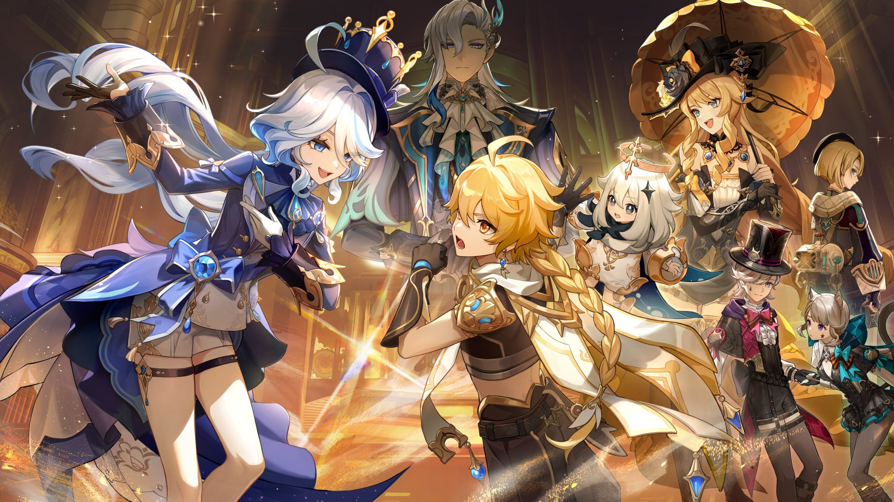
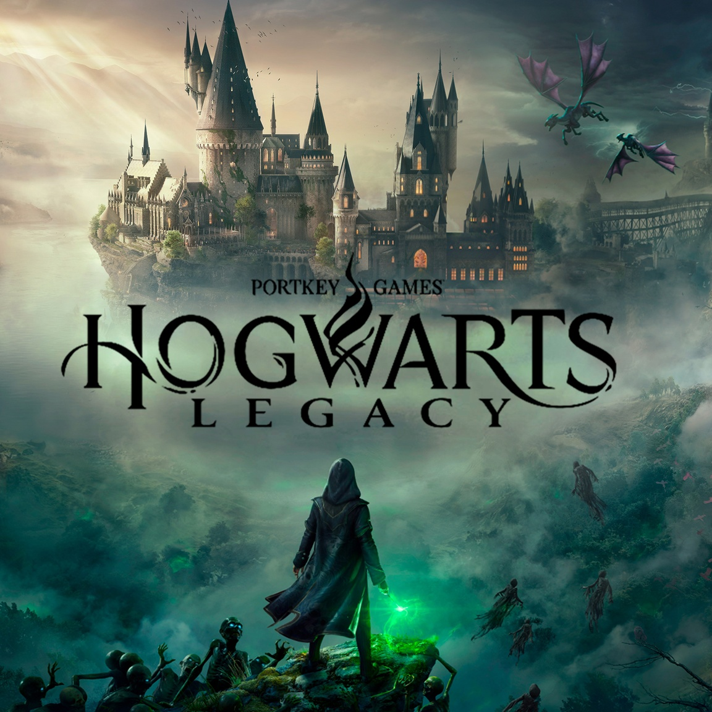

Блог про мои любимые компьютерные игры
Привет, дорогие читатели! В этой статье я хотела бы рассказать вам про мои любимые компьютерные игры. Лично для меня, это довольно хороший способ расслабиться, но, конечно, я стараюсь следить за экраннным временем, проведенным за игрой. На самом деле, для меня было очень сложно найти по-настоящему интересную, качественную игру. Я пробовала играть в много компьютерных игр (у меня даже был опыт на PlayStation!), но сейчас моя задача выбрать из них самые, самые лучшие и поделиться ими с вами. Я расскажу про игры как на PlayStation, так и игры для Ipad и компьютеров. Хорошего вам чтения. Итак, начнём!
Содержание:
Genshin Impact
Genshin Impact - это одна из самых известных компьютерных игр в мире от разработчиков MiHoYo Limited. Действие игры развивается в регионе, полном чудес, загадок, волшебных существ и густонаселенном регионе - Тейвате. Главн(ый/ая) геро(й/иня), путешествуя по разным мирам со своей сестрой/братом, сталкивается напрямую с волшебницой. Приняв бой, главн(ый/ая) геро(й/иня) теряет свою сестру/брата. После этого главный герой отправляется на его поиски по всему Тейвату, чтобы найти своего брата Игра была предствлена в 2019 году. В Genshin Impact спокойная атмосфера, невероятно красивая графика и захватывающий сюжет. Игра затягивает своими красиво разработанными, персонажами с раскрытым характером, имеющими большое количество атак и прекрасно подходящей к их характеру озвучкой. Также в игре есть возможность пообщаться с любимыми персонажами, поиграть с ними и даже выполнить задание. С каждым месяцом в игру вводят новые сюжеты и персонажей с яркой механикой и красивой стилистикой. Графика Genshin Impact очень похожа на аниме, поэтому, если вы любите аниме, игра должна произвести на вас положительные впечатления. Сейчас в игре насчитывается около 47 играбельных персонажей, которыми вы можете играть и множество, которые, к сожалению, не введены в игру как играбельные, но учавствующие в сюжете.
Минусы игры:
- В игре нет русской озвучки, но снизу всегда присутствуют русские субитры, сама игра переведена на русский язык.
Hogwards Legacy
Hogwards Legacy - первая большая игра по вселенной Гарри Поттера. Сюжет развивается задолго до рождения Гарри Поттера, в 1800х годах. Хотя по ходу игры вы можете встретить дальних родственников современных героев (например, профессор Уизли). Молод(ой/ая) волшебни(к/ца) прибывает на пятый курс учёбы в школе чародейства и волшебства Хогвартс. С того момента и начинаются её путешествия, новые знакомства, опасные приключения, исследование волшебного мира. В эту игру можно играть как на компьютере, так и на PlayStation (хочу сказать, что на Плэй Стэйшн играть намного интереснее, чем на компьютере). В начале игры вы можете создать любого персонажа, который вам понравится, есть возможность сделать ему совершенно любую внешность, продумать каждую ее деталь. Сам магический мир, созданный разработчиками затягивает интересным сюжетом, объемной графикой, разнообразием персонажей и большим количеством скрытых сундуков и секретных квестов. Хогвартс спроектирован невероятно запутанно, с большим количеством коридоров, в которых кроются настоящие чудеса. К любому персонажу, стоящему в кабинетах и коридорах Хогвартс можно подойти и поговорить. Множество магических заклинаний, существ, боссов, персонажей, возможностей и, конечно, сюжетов! Мир Гарри Поттера ждет тебя!
Минусы игры:
- В игре нет русской озвучки. Озвучка идёт на английском языке, а внизу - английские субтитры. Сама игра не переведена на русский язык.